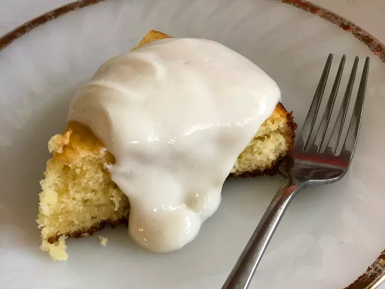

Lemon Cake From Scratch

Make Lemon Cake From Scratch
This is one of the most delicious lemon cakes ever!
Below you can find the following ingredients needed and the steps to follow.
Ingredients
- 21/2 cups all-purpose flour
- 1 tbsp lemon zest
- 1 tsp salt
- 1/2 tsp baking powder
- 1/2 tsp baking soda
- 1 cup unsalted butter (room temperature)
- 11/2 cups white sugar
- 2 large eggs
- 3 large egg yolks
- 2 tablespoons fresh lemon juice
- 1 cup low-fat buttermilk
Steps
- Preheat oven to 350 degrees F (175 degrees C). Butter and flour two 8-inch cake pans, tapping out excess flour.
- Whisk flour, lemon zest, salt, baking powder, and baking soda together in a bowl.
- Beat butter and sugar in a large bowl using an electric mixer until light and fluffy. Beat eggs and egg yolks, 1 at a time, into creamed butter mixture on low speed, beating well after each addition before adding the next. Beat lemon juice into butter mixture. Beat flour mixture, alternating with buttermilk, into butter mixture until batter is just combined. Divide batter between the prepared cake pans.
- Bake in the preheated oven until cake pulls away from sides of pan, 32 to 35 minutes. Cool cakes in pans for 10 minutes. Run a knife around the edges of pan and invert cake onto a wire rack to cool.